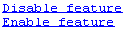

Create Hyperlinks that Run Functions
The special keyword matlab: lets you embed commands in other
functions. Most commonly, the functions that contain it display hyperlinks, which
execute the commands when you click the hyperlink text. Functions that support
matlab: syntax include disp, error, fprintf, help, and warning.
Use matlab: syntax to create a hyperlink in the Command Window that
runs one or more functions. For example, you can use disp to
display the word Hypotenuse as an executable hyperlink as
follows:
disp('<a href="matlab:a=3; b=4;c=hypot(a,b)">Hypotenuse</a>')matlab:,
resulting inc =
5a, b, and c in the base
workspace.The argument to disp is an <a href> HTML
hyperlink. Include the full hypertext text, from '<a href= to
</a>' within a single line, that is, do not continue long
text on a new line. No spaces are allowed after the opening < and
before the closing >. A single space is required between
a and href.
You cannot directly execute matlab: syntax. That is, if you
type
matlab:a=3; b=4;c=hypot(a,b)
??? matlab:a=3; b=4;c=hypot(a,b)
|
Error: The expression to the left of the equals sign
is not a valid target for an assignment.You do not need to use matlab: to display a live hyperlink to the
Web. For example, if you want to link to an external Web page, you can use
disp, as
follows:
disp('<a href="http://en.wikipedia.org/wiki/Hypotenuse">Hypotenuse</a>')Using matlab:, you can:
Run a Single Function
Use matlab: to run a specified statement when you click a
hyperlink in the Command Window. For example, run this command:
disp('<a href="matlab:magic(4)">Generate magic square</a>')
It displays this link in the Command Window:
When you click the link, MATLAB runs magic(4).
Run Multiple Functions
You can run multiple functions with a single link. For example, run this command:
disp('<a href="matlab: x=0:1:8;y=sin(x);plot(x,y)">Plot x,y</a>')It displays this link in the Command Window:
When you click the link, MATLAB runs this code:
x = 0:1:8; y = sin(x); plot(x,y)
Redefine x in the base workspace:
x = -2*pi:pi/16:2*pi;
Click the hyperlink, Plot x,y again and it changes the current
value of x back to 0:1:8. The code that
matlab: runs when you click the Plot x,y
defines x in the base workspace.
Provide Command Options
Use multiple matlab: statements in a file to present options,
such as
disp('<a href = "matlab:state = 0">Disable feature</a>')
disp('<a href = "matlab:state = 1">Enable feature</a>')
The Command Window displays the links that follow. Depending on which link you
click, MATLAB sets state to 0 or
1.

Include Special Characters
MATLAB correctly interprets most text that includes special characters, such
as a greater than symbol (>). For example, the following
statement includes a greater than symbol (>).
disp('<a href="matlab:str = ''Value > 0''">Positive</a>')and generates the following hyperlink.
Some symbols might not be interpreted correctly and you might need to use the ASCII value for the symbol. For example, an alternative way to run the previous statement is to use ASCII 62 instead of the greater than symbol:
disp('<a href="matlab:str=[''Value '' char(62) '' 0'']">Positive</a>')